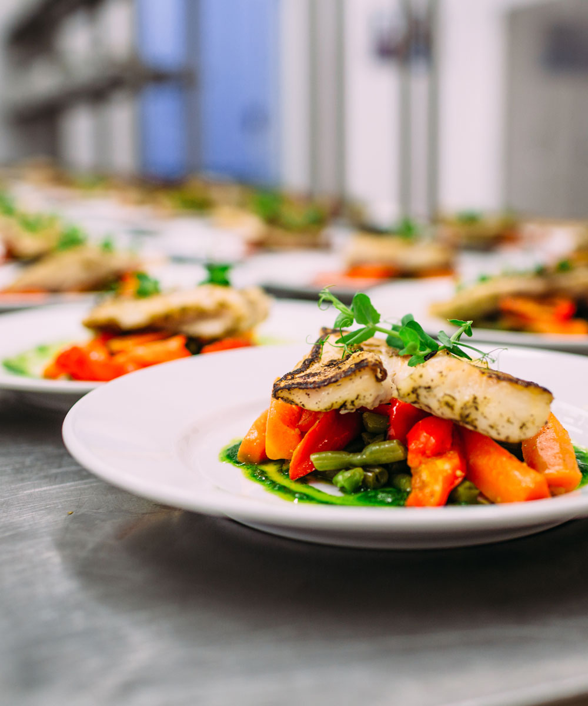

Om vår mat
För oss är smak och kvalitet två sidor av samma mynt. Fina råvaror och noggrann kontroll gör att våra rätter kan smaka så bra som de gör.
Vi är den enda rikstäckande restaurangen som bara använder svenskt nötkött och kyckling. Det gör vi för att stödja svenskt lantbruk och för att du ska känna dig trygg när du äter hos oss. Dessutom blir det godare rätter.
